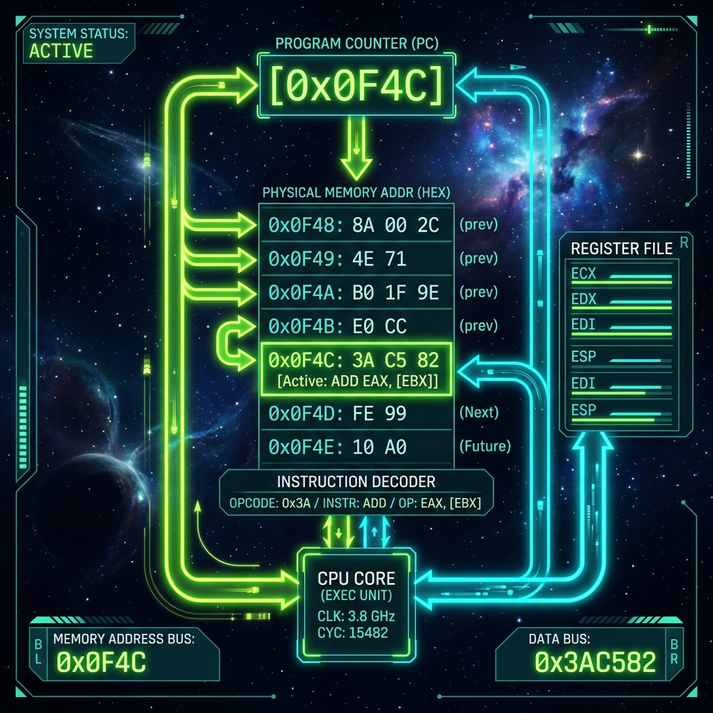

Introduction
In the first part of our series, we established the heartbeat of our 8-bit computer by designing an adjustable, stable 555-timer based clock circuit capable of generating the precision timing pulses needed to synchronize every operation within our custom CPU architecture. But a heartbeat without a brain is meaningless. The clock simply provides the rhythm; the computer needs a way to know where it is in its execution path and what to do next. This is where the Program Counter (PC) comes into the picture.
If you think of a computer's memory as a massive library of books (instructions and data), the Program Counter is the diligent librarian with a notebook, constantly keeping track of exactly which book on which shelf needs to be read next. It is, unequivocally, one of the most critical components of any von Neumann or Harvard architecture machine.
In this second installment, we will embark on a highly technical deep dive into designing a custom Program Counter from scratch. We will explore the nuances of sequential addressing, the complexities introduced by branching and jumps, and finally, we will dive into the overarching instruction fetch logic that orchestrates the flow of data from memory into the CPU's execution units. We will be using raw flip-flops, logic gates, and adders to build this counter, and we will simulate the design natively using the SQGATE framework.
The Anatomy of a Program Counter
At its core, a Program Counter is a specialized digital register capable of incrementing its stored value by one (or a specific word length offset) on command. In our 8-bit architecture, the Program Counter must hold an 8-bit memory address, which allows it to address up to 256 individual bytes of memory (28 = 256). While 256 bytes might seem extraordinarily small by modern standards—where gigabytes and terabytes are the norm—it is the perfect size for an educational 8-bit breadboard or simulated computer, keeping the wiring and logic manageable while still being Turing complete.
Our PC needs to perform three fundamental operations:
- Increment (Count Up): During normal sequential execution, the PC must advance to the next instruction address after the current instruction has been fetched. This requires an incrementer circuit or a cascading flip-flop arrangement.
- Parallel Load (Branching): When the CPU encounters a jump (
JMP), call (CALL), or conditional branch instruction (e.g.,JZ- Jump if Zero), normal sequential execution is interrupted. The PC must be able to load a completely new 8-bit address directly from the internal data bus, overwriting its current value. - Reset: When the computer is powered on or a reset button is pressed, the PC must clear its contents to
00000000so that execution begins at the first memory address (the reset vector).

Mastering Sequential Addressing
Sequential addressing is the default behavior of any CPU. Instructions are placed in memory in consecutive addresses, and the CPU reads and executes them one by one. To achieve this, the Program Counter acts as a synchronous binary counter.
Building an 8-bit synchronous counter from scratch involves utilizing D-type or JK-type flip-flops. Let's analyze the design using D flip-flops. An 8-bit counter requires eight D flip-flops. To make it count synchronously (meaning all bits update simultaneously on the rising edge of the clock, avoiding the ripple effect and propagation delays inherent in asynchronous ripple counters), we use combination logic to determine the next state of each flip-flop.
The logic equation for the next state of a particular bit Qn in a synchronous counter is simply the XOR of its current state and the logical AND of all previous bits. Mathematically, for an increment-enabled counter:
- D0 = Q0 ⊕ Enable
- D1 = Q1 ⊕ (Q0 ⋅ Enable)
- D2 = Q2 ⊕ (Q1 ⋅ Q0 ⋅ Enable)
- Dn = Qn ⊕ (Qn-1 ⋅ Qn-2 ... Q0 ⋅ Enable)
This means that a bit will toggle its state only if all the bits representing lower significance are currently at logic HIGH (1) and the counter is enabled. While this logic is mathematically elegant, implementing wide AND gates (like a 7-input AND gate for the MSB) can introduce propagation delays and fan-in issues in physical hardware. In practice, this is often mitigated using carry look-ahead logic or by cascading smaller 4-bit synchronous counters like the ubiquitous 74LS161 or 74LS163 ICs.
For our design, we will employ an architecture that closely mirrors how modern Arithmetic Logic Units (ALUs) operate: a standard 8-bit register paired with a dedicated 8-bit incrementer (a simplified adder where one operand is hardwired to 1). The output of the register feeds into the incrementer, and the incrementer's output loops back into the register's input. A multiplexer dictates whether the register loads the incremented value or a new value from the data bus.
Implementing Branching and Jump Logic
If our computer could only execute sequentially, it would be no better than a glorified mechanical music box. The true power of computing lies in conditional execution—the ability to make decisions and alter the control flow based on data. This is achieved through Branching.
When a Jump instruction is decoded by the Control Unit, the sequential counting must stop. Instead, a new target address is placed onto the main CPU bus. The Control Unit asserts the Load Enable (LE) control signal on the Program Counter. On the next clock edge, instead of latching the incremented value, the PC's internal register latches the 8 bits present on the bus.
Let's consider a practical example. Suppose the PC is currently at address 0x05, and the instruction at 0x05 is JMP 0x2A.
- Fetch: The CPU fetches the opcode for
JMPfrom address0x05. The PC increments to0x06. - Decode: The Control Unit realizes this is a multi-byte instruction and that it needs an address.
- Operand Fetch: The CPU fetches the operand
0x2Afrom address0x06and places it on the bus. - Execute (Branch): The Control Unit asserts the PC's
Loadpin. On the clock pulse,0x2Ais loaded into the PC. - Next Cycle: The next fetch cycle will correctly pull the instruction from address
0x2A.
Conditional jumps (like Jump if Carry or Jump if Zero) add one more layer of gating. The Load signal is ANDed with the corresponding status flag from the ALU. If the flag is set, the load occurs. If not, the PC simply increments normally, ignoring the jump address.
SQGATE Circuit Implementation
To visualize this, let's look at how we define this Program Counter within the SQGATE simulation framework. The following JSON snippet defines a robust 8-bit Program Counter module. Notice how we use a register, an adder for incrementing, and a multiplexer (implied by the control logic) to select between the incremented value and the bus input.
{
"id": "program_counter_8bit",
"type": "module",
"name": "8-Bit Program Counter",
"inputs": [
{"name": "CLK", "type": "bit"},
{"name": "RST", "type": "bit"},
{"name": "COUNT_EN", "type": "bit"},
{"name": "LOAD_EN", "type": "bit"},
{"name": "BUS_IN", "type": "bus", "width": 8}
],
"outputs": [
{"name": "PC_OUT", "type": "bus", "width": 8}
],
"components": [
{
"id": "pc_reg",
"type": "register8",
"clock": "CLK",
"reset": "RST",
"load": "REG_LOAD_SIGNAL",
"data_in": "MUX_OUT"
},
{
"id": "incrementer",
"type": "adder8",
"a": "pc_reg.q",
"b": "0x01",
"carry_in": "0"
},
{
"id": "input_mux",
"type": "mux2_8bit",
"sel": "LOAD_EN",
"in0": "incrementer.sum",
"in1": "BUS_IN"
},
{
"id": "load_logic",
"type": "or_gate",
"in1": "COUNT_EN",
"in2": "LOAD_EN"
}
],
"connections": [
{"from": "input_mux.out", "to": "MUX_OUT"},
{"from": "load_logic.out", "to": "REG_LOAD_SIGNAL"},
{"from": "pc_reg.q", "to": "PC_OUT"}
]
}In this SQGATE schema, the input_mux decides the next state. If LOAD_EN is high, it routes the BUS_IN to the register. Otherwise, it routes the output of the incrementer. The load_logic OR gate ensures that the register actually updates on the clock edge whether it's counting or loading.
The Fetch Logic Cycle
The Program Counter doesn't operate in a vacuum. It is intimately tied to the Instruction Fetch cycle. In an 8-bit microarchitecture, an instruction cycle is typically divided into several T-states (timing states). The first few T-states are universally dedicated to fetching the instruction.
Let's map out a typical Fetch Cycle (often denoted as T0, T1, T2):
- T0 - Address Setup: The content of the Program Counter must be moved to the Memory Address Register (MAR). The Control Unit asserts
PC_OUT(enable PC to bus) andMAR_IN(latch bus to MAR). The PC's value now stabilizes on the memory's address lines. - T1 - Memory Read & PC Increment: The memory is instructed to read (
RAM_OUT). The data byte at the addressed location is placed on the bus. Simultaneously, the Instruction Register is told to latch this byte (IR_IN). Critically, during this same clock cycle, the PC is incremented (PC_CE- Count Enable) so it points to the next byte for future operations. - T2 - Decode: The fetch is complete. The Instruction Register now holds the opcode. The instruction decoder takes over to determine which microinstructions must be executed in subsequent T-states (T3, T4, etc.) to actually perform the operation.
This overlapping of operations—incrementing the PC in the same cycle the memory is being read—is a rudimentary form of pipelining and significantly speeds up execution, preventing the CPU from wasting a dedicated clock cycle just to increment the counter.
Challenges in High-Speed Fetching
While our 8-bit breadboard CPU might run at a leisurely 1 kHz to a few MHz, modern processors operating in the gigahertz range face immense challenges with the Program Counter and Fetch Logic. As clock speeds increase, the propagation delay through the incrementer (ripple carry delays) becomes a severe bottleneck. Furthermore, memory latency means that fetching an instruction takes far longer than a single CPU clock cycle.
This has led to the development of sophisticated techniques like Branch Prediction, Instruction Prefetch Buffers, and intricate cache hierarchies (L1i, L2 caches). A modern PC is often predicting where it needs to jump long before the actual condition is evaluated, keeping the pipeline fed with instructions to avoid costly stalls.
Conclusion
The Program Counter is the steadfast navigator of the CPU. By meticulously designing its increment logic, load capabilities for branching, and seamlessly integrating it into the fetch cycle, we establish the foundational control flow of our 8-bit computer. We have transitioned from the static generation of clock pulses to dynamic, sequential traversal of memory space.
In the next part of this series, we will attach memory to this addressing scheme, exploring the design of the Memory Address Register (MAR), Random Access Memory (RAM), and general-purpose registers that will hold our operational data.